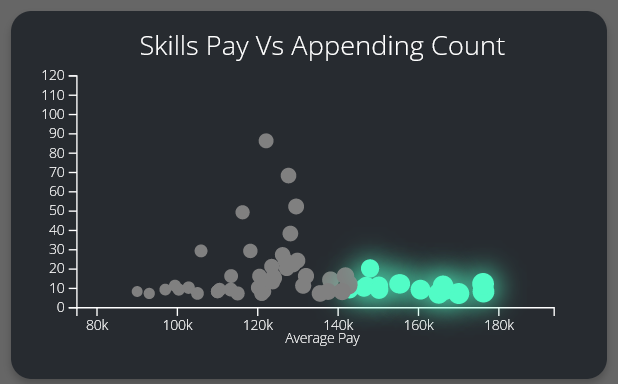

Welcome, In my humble analysis to the "Data Jobs & Freelance Market Analysis" where I try to find trends and insights to help
other data nerds to know more about their major.
Table of contents:
| Questions I have asked. |
Here |
| Answering Freelance questions. |
Here |
| Answering Jobs questions. |
Here |
| Power BI dashboard & Web App investigation. |
Here |
| Extra conclusions & summary. |
Here |
Questions I have asked:
To ask those questions I have tryed my best to use data analytics
SMART mehtod (Specific, Measurable, Action-oriented, Relevant & Time bound)
So they can give us more accurate & relevant answers and here are all of the project questions:
- How many jobs are Available per country and per profession on Likedin?
- What's the Ratio between people who earned money on UpWork Vs Guru?
- Average Salary per profession and per country on LinkedIn?
- What are Top 5 people in earnings amount most frequent words in their describtions?
- What are Worst 5 people in earnings amount most frequent words in their describtions?
- What Skills are Appending the most in job describtions per proffesion
- Correlation between Earnings amount, Years of Exp, Earnings & Feedback in Upwork.
- Does years of Experience affect the earnings amount positively?
- Does the Consultation offering affect the Earnings amount positively?
- What are Top 3 countries in total freelancers Earnings Vs Top 3 countries in freelancers Count?
- What's the most common Employment type per proffision?
- What's the most common Location type per proffision
- What's the Average Guru earnings per proffision excluding zero earnings?
- What are the top skills in average Earnings on UpWork?
- What are the most Common earnings amounts (earnings amounts distrbution) on Upwork.
- Correlation between Hour rate and Avg earnings on Upwork.
- What's the average Years of Exp on upwork per proffision and per country
- Correlation between skills pay and Appending count in job describtions?
- How many jobs are available per Industry and what are the top 10 ones.
Answering Freelance questions:
Here we will answer the questions that we didn't answer in the Web app or the Dashboard because I have special sections just for them
so here I will answer only
some of the freelance questions in the list above and not all of the freelance questions because
some of them will be answered in the Dashboard or the Web app.
Now let's start with the
First question which was asking about the ratio between the people who earned money and who didn't
in upwork vs guru this question will help up determine which platfrom to use when you are starting and here is a visualization
to help us understand that better.
Oh we can see a really huge difference between Upwork and Guru in terms of possibility to earn money we can find that Upwork has
%1600 more chance to earn money than Guru which means that Upwork is really less compitative and
easier to start with where Guru has really rare chance to earn money on.
this insight is genrlized between all professions and for more spesfic visuals you can go for the dashboard and the web app.
Now let's answer the
Second and
Third question which is
what are the most popular words that top and least frealancers put in their describtions this answer may help us find what
words you should place in your describtion and also it may be used as cool piece of data art and here's it:
I know this chart maybe hard to understand but if took your time to understand it you'll find that Top freelancers use words that indicate how can
they help you so you'll find words like: [Solution, Service, Development,Quality, Lead] where the least freelancers don't mention how can they help
you ,instead they focus completly on their hard skills so if you want to earn more money as data nerd freelancer don't forget to mention
How can you
help your client in detail before mentioning your skills.
also we can find that top freelancers are mentioning
Rare skils rather than mentioning their easy skills so they mention skills that make them
deffrint so should you.
Now with the
Fourth & Fifth question which asks about the correlation between the Years of Exp, Earnings & Feedback this question
is really important because it will make us understand Three things:
- How much years of experience you need to join data jobs freeelance market.
- How much does each feature affect each other.
- Is the Earnings amount affected positivly by the feedback .
And here are the charts:
I know that the chart on th right may be a bit hard but we will explaint it now let's start from the chart on the left we can find that
the least
Two years of experience to start getting money but that money won't be as high as if you have
four years of experience but after Four or Five years of experience the earnings won't get affeccted that much.
and from the second chart we can find more insights and if you don't understand it you can search for:
Spearman correlation coefficient
first insight we can get is that the Earnings amount is correlated strongly to Experience years with
p= 0.34 which mean that the years of experience can make
you get more earnings
Also we can find an unexpected conclusion which is that there isn't any correlation between feedback and the earnings amount
with
P < 0.05 and we can find that there's a
weak correlation between Feedback and Experience years
The
Sixth question now asks does the consultation offering affect the Earnings amount positively which will
lead us to know if it's worth it to spent an hour with your client before the buy process and here's a visualization for that:
We can find from this chart that it's worth it to offer consultation on you project because we can find about
%45
increase in total earnings for people who offers consultations vs people who didn't.
Now with the
Seventh question asking what are top countries in profiles count vs top countries in total earnings
per freelancing platform which will learn us about any region bias for those platforms and here are a couble of visuals to understand that better:
We can find from the Guru visuals that it's really biased towards People from "United States" with large gap between it and the other countries
infact the most profiles are from "India" with about half of the accounts but it's about
1/6 of top 10 countries
total earnings amount where the US has the half.
Where UpWork Doesn't have any bias towards any country and seamly has fair chance.
Answering Jobs questions:
Here also as the section before we will answer the questions we can awnser without the Dashboard or the Web app and now let's start
with the
First question which asks for how many
Jobs Postings are available per proffision and per country so we can see how compatitive
each job title is in a nutshell and here's a visualization for that:
We can find from this visual that the
Data Entry Jobs are the most common ones where
ML developer jobs are the least
Appearing ones and also we can find that the 'US' has really higher Appending counts than the 'EU' especially in the
'Data Entry & Data Analyst' Jobs.
And now with
Second question and the most hot one asking what's the
Average Salary per country and profession which
is one of the most popular questions about the data jobs and now let's look at the graph:
Oh We can find from this plot that the
ML developer is the most paid job and then the data scientist and the data engineer jobs and you can find a really
cool unexpected insight if you looked at the chart above you'll find that the more the jobs postings for a job title is the less the salary and vica versa
which makes the ML developer jobs the most paid jobs.
Now let's see the
Third question which is: "What are the top 10 appending skills per job title?" this question will make us
know what skills are must for each proffesion so you have more chance to get your application accepted and now with the chart:
Now you can find the top requierd skills in your major but any way we can find that Python is a must (or requird sometimes) skill exept in the data entry
jobs and also we can find also relly cool insight that
SQL is more requird than Excel in data analyst jobs.
And Here's the
Fourth question in the jobs analysis asking What's the most common Employment type per proffision
and I mean with Employment type the Type of the job nature wither it's Full time, Part time or Intern etc .. this question will make us know what are the
most common job type per job title
We can find that
Full time Jobs are the most popular per each job title and some times the Contractor jobs gets the second place or Part time ones
I know we couldn't get that much insights as the questions above but still this info may be useful.
And now with at last but not least with the
Fifth saying What's the most common Location type per proffision
(like: Remotly, Hybrid, From office) which will help us know each proffision most popular work nature with the help of the question above and now
with the chart:
We can find that all of the proffisions have the most of the jobs postings as
Remote jobs except Data entry jobs and also we can find
that Data analyst and Data scientist jobs have more chance to be Remote.
Power BI dashboard & Web App investigation:
Hello here in this section for sorry I can't give to you any written insights but I will write some conclusions in the
conclusions section from the dashboards so please go to them however the questions that we didn't answered in the last two
sections are answered in them also they have more intercativity like drop downs, hover effect etc ...
I createed those two dashboards so I can have more interactive and fun way to see this data instead of using the report only
because it can be boring sometimes in those dashboards I tries my best to answer question I haven't answered in the report
but still there are some of the answers are repeated.
And now let's see some of the screenshots

Extra conclusions & summary:
In this section we will discuss extra conclusions I didn't ask questions about and summarize some of the most important
awnsers so let's start with the
First conclusion which is from the Web dashboard
which is that the more the skills are requierd the less they pay and vica versa so having skills that
aren't requierd
in your major will help you get more niche and High paid jobs.
And the
Second one is founded from many charts in the dashboard and in the analysis
notebook which is that we can find
Negative non-direct correlation between how much
jobs are available and it's pay because the less the job postings are for a job title the less the applications count
for it the more Higher the salary so we can find that
Data entry job has the most
job postings while having the
Lowesr salary.
At last but not least the
Third conclusion is that the Data Analyst get more paid when he have some of the Data Scientist
and Data Engineer skills and also that makes him more hirable and get a salary that's near to Data scientist or Data Engineer
Pay.
Now after we finished our analysis but still there are some improvoments that will be done in the
future like scaling up the datawish you now know more about the Data jobs and now you know much about
it that will help you get your first job so remember always to stay learning Learn each day something
new and goodbye.